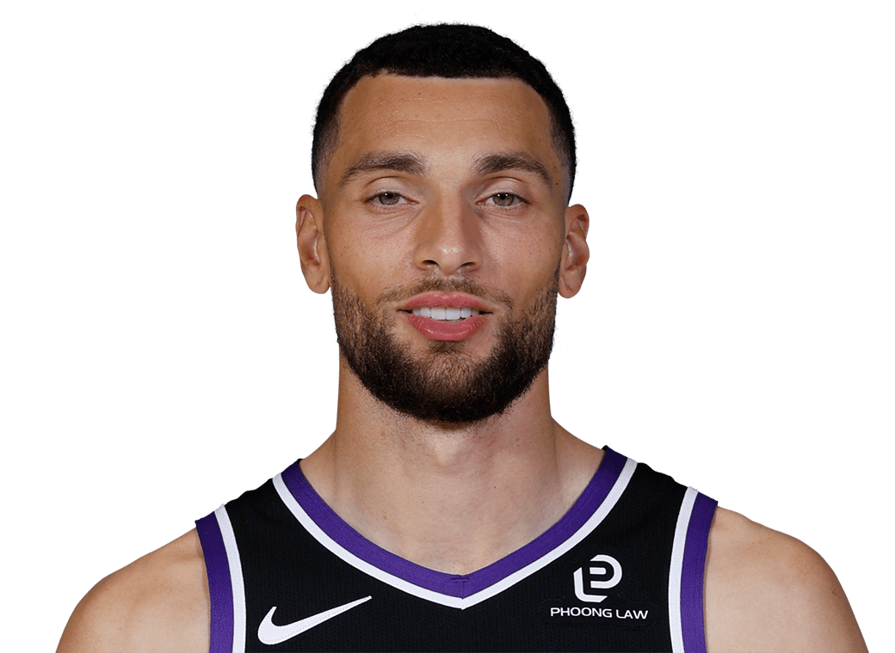
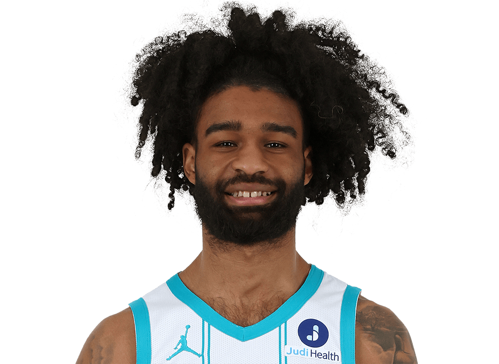
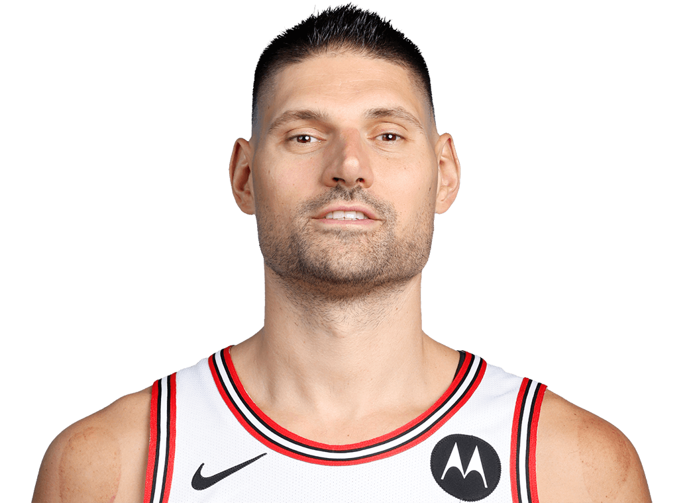
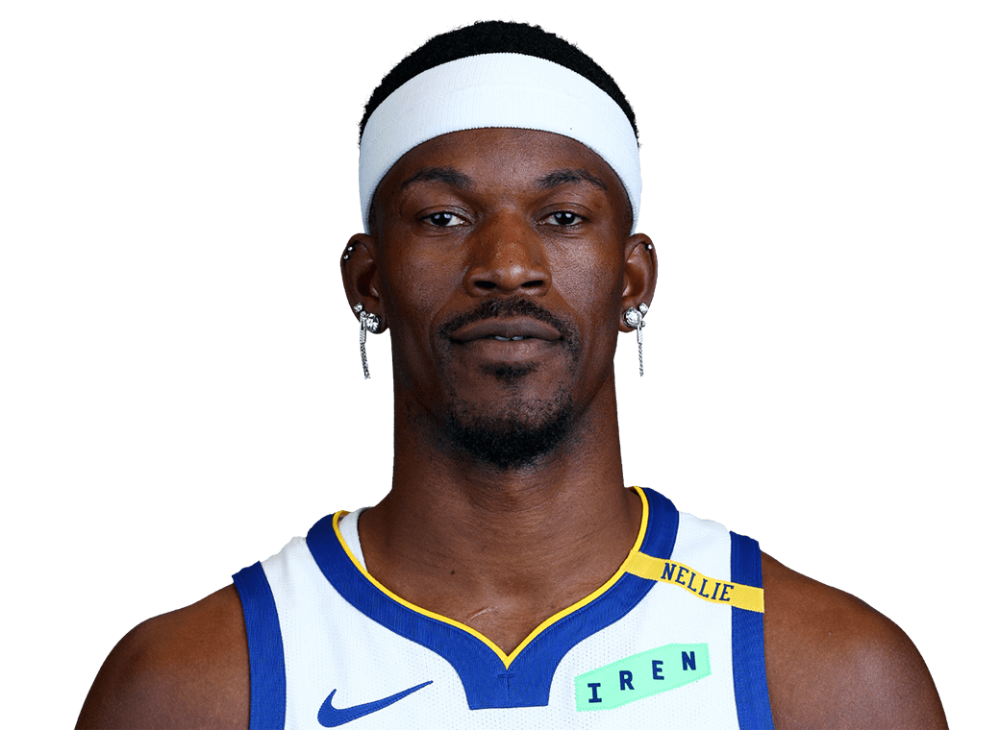
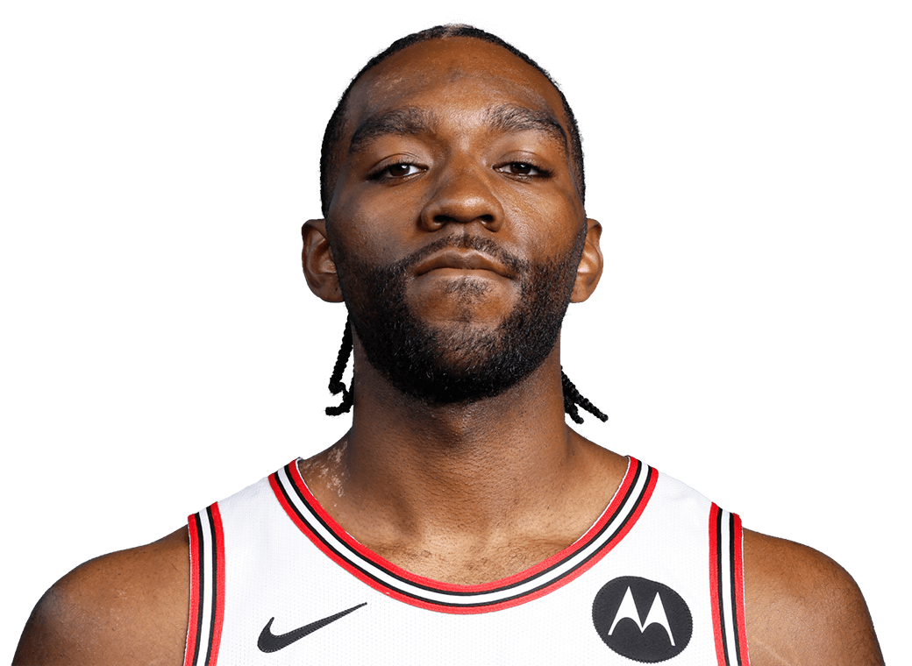
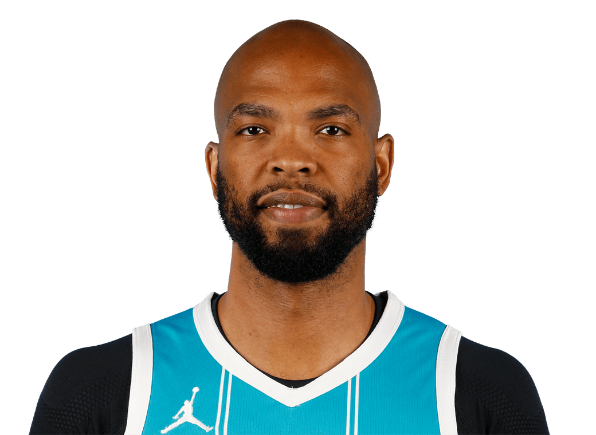

Career miles run in games since tracking began in 2013-14, in marathons (26.2 miles)






MPH is average speed while on the court. Includes playoffs and play-in.
Source: NBA.com player tracking · @chicagobullsdata